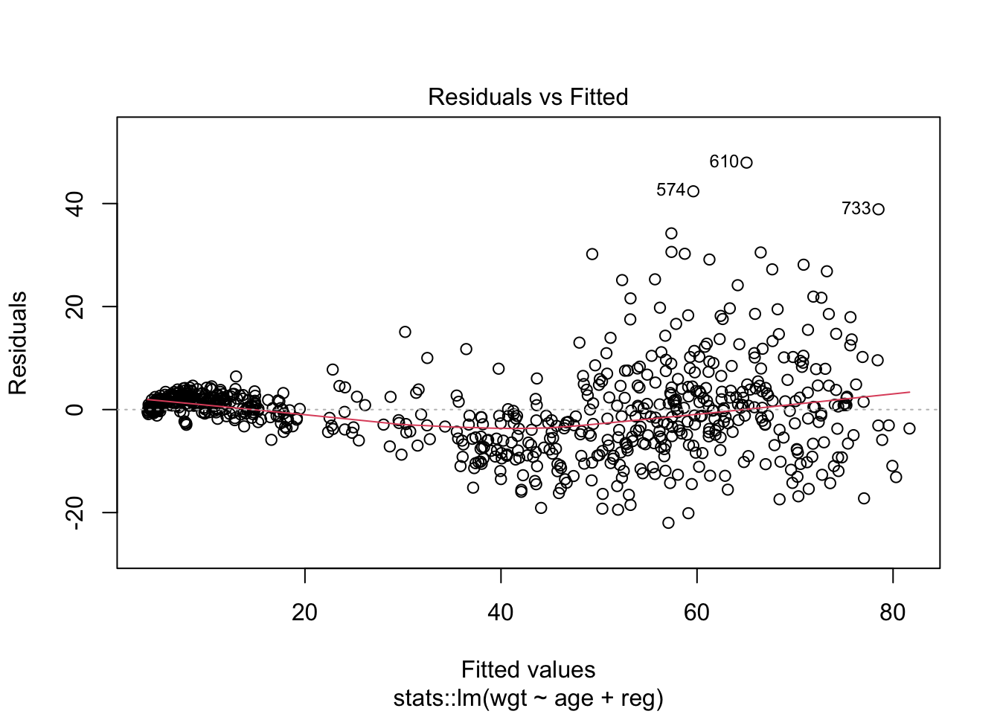

Functions in R are like magic tools that make your coding life easier. Instead of writing long, confusing chunks of code, you can create functions to do specific tasks. This makes your code neat, easy to understand, and less prone to mistakes. Imagine you have a set of instructions you use often; with a function, you can package those instructions and reuse them whenever you need. R already has lots of built-in functions, and you can create your own too.
Just remember to give your functions clear names and explain what they do–it’s like leaving a note for your future self (or others) to understand your code better.
Exercise 1: Functions
Create a function that calculates the sample standard deviation of a vector of numbers. Validate it by comparing the output to the function sd(). Write documentation for such function.
#' Calculate the standard deviation of a #' \sigma = \sqrt{\frac{1}{N-1}\sum_{i=0}^N{(x_i - \bar{x})^2}}$$#' #' @param values A numeric vector#' @returns STD of the vector#' @examples#' std_own(c(3,5,4))std_own <-function(values) { s <-sqrt(1/(length(values)-1)*sum((values -mean(values))^2))return(s)}std_own(c(1,2,3,3))
[1] 0.9574271
Code
sd(c(1,2,3,3))
[1] 0.9574271
In this practical I will be explicitly specifying the package of each function (e.g. readr::read_delim). Specifying the package is not required and can be cumbersome for the most commonly used functions. I do it to show the source of the functions you are using.
First, open the R project you created last week (or create a new one).
Then, load the required library (tidyverse). Look at the output, which packages does it load?
Code
library(tidyverse)
── Attaching core tidyverse packages ──────────────────────── tidyverse 2.0.0 ──
✔ dplyr 1.1.2 ✔ readr 2.1.4
✔ forcats 1.0.0 ✔ stringr 1.5.0
✔ ggplot2 3.4.2 ✔ tibble 3.2.1
✔ lubridate 1.9.2 ✔ tidyr 1.3.0
✔ purrr 1.0.1
── Conflicts ────────────────────────────────────────── tidyverse_conflicts() ──
✖ dplyr::filter() masks stats::filter()
✖ dplyr::lag() masks stats::lag()
ℹ Use the conflicted package (<http://conflicted.r-lib.org/>) to force all conflicts to become errors
In the following exercises we will use the same dataset as last time, boys. You need to download dataset_boys.csv from here and add it to a folder “data” in the same folder as your markdown file.
Then, read the file dataset_boys.csv using the code in the next cell.
Reading data
Code
#Reading the fileboys <- readr::read_delim("data/dataset_boys.csv",delim=",")
Rows: 748 Columns: 9
── Column specification ────────────────────────────────────────────────────────
Delimiter: ","
chr (3): gen, phb, reg
dbl (6): age, hgt, wgt, bmi, hc, tv
ℹ Use `spec()` to retrieve the full column specification for this data.
ℹ Specify the column types or set `show_col_types = FALSE` to quiet this message.
Code
is_tibble(boys)
[1] TRUE
Exercise 2-6: Tidyverse operations
Filter: Create a new tibble with the boys younger than 15 that do not live in the “north” region, and calculate their average age.
Mutate: Create two new variables, one call hgt_square (hgt^2), and another called bmi_2 (10000 \(\times\) wgt/hgt_square).
Code
# The arguments are evaluated sequentially in tidyverse, by the time we get to bmi_2 the computer has already created hgt_squaredplyr::mutate(boys, hgt_square = hgt^2,bmi_2 =10000* wgt / hgt_square)
# A tibble: 748 × 11
age hgt wgt bmi hc gen phb tv reg hgt_square bmi_2
<dbl> <dbl> <dbl> <dbl> <dbl> <chr> <chr> <dbl> <chr> <dbl> <dbl>
1 0.035 50.1 3.65 14.5 33.7 <NA> <NA> NA south 2510. 14.5
2 0.038 53.5 3.37 11.8 35 <NA> <NA> NA south 2862. 11.8
3 0.057 50 3.14 12.6 35.2 <NA> <NA> NA south 2500 12.6
4 0.06 54.5 4.27 14.4 36.7 <NA> <NA> NA south 2970. 14.4
5 0.062 57.5 5.03 15.2 37.3 <NA> <NA> NA south 3306. 15.2
6 0.068 55.5 4.66 15.1 37 <NA> <NA> NA south 3080. 15.1
7 0.068 52.5 3.81 13.8 34.9 <NA> <NA> NA south 2756. 13.8
8 0.071 53 3.89 13.8 35.8 <NA> <NA> NA west 2809 13.8
9 0.071 55.1 3.88 12.8 36.8 <NA> <NA> NA west 3036. 12.8
10 0.073 54.5 4.2 14.1 38 <NA> <NA> NA east 2970. 14.1
# ℹ 738 more rows
group_by + summarize: Group by region, and calculate the average bmi, wgt and hgt. You could use a pipe to make it more compact.
Code
# Without a pipegr_boys <- dplyr::group_by(boys, reg) dplyr::summarize(gr_boys, mean_bmi =mean(bmi, na.rm=TRUE),mean_wgt =mean(wgt, na.rm=TRUE),mean_hgt =mean(hgt, na.rm=TRUE))
# A tibble: 6 × 4
reg mean_bmi mean_wgt mean_hgt
<chr> <dbl> <dbl> <dbl>
1 city 18.2 34.0 126.
2 east 17.9 37.0 134.
3 north 19.4 49.9 152.
4 south 17.8 34.5 128.
5 west 18.0 36.4 130.
6 <NA> 15.2 9.26 73.0
Code
# With a pipeboys |> dplyr::group_by(reg) |> dplyr::summarize(mean_bmi =mean(bmi, na.rm=TRUE),mean_wgt =mean(wgt, na.rm=TRUE),mean_hgt =mean(hgt, na.rm=TRUE))
# A tibble: 6 × 4
reg mean_bmi mean_wgt mean_hgt
<chr> <dbl> <dbl> <dbl>
1 city 18.2 34.0 126.
2 east 17.9 37.0 134.
3 north 19.4 49.9 152.
4 south 17.8 34.5 128.
5 west 18.0 36.4 130.
6 <NA> 15.2 9.26 73.0
arrange: Sort the dataset by bmi, what can you say about the boys with low bmi?
Code
#They are small babiesdplyr::arrange(boys, bmi)
# A tibble: 748 × 9
age hgt wgt bmi hc gen phb tv reg
<dbl> <dbl> <dbl> <dbl> <dbl> <chr> <chr> <dbl> <chr>
1 0.038 53.5 3.37 11.8 35 <NA> <NA> NA south
2 0.164 55 3.73 12.3 37.8 <NA> <NA> NA west
3 0.057 50 3.14 12.6 35.2 <NA> <NA> NA south
4 0.071 55.1 3.88 12.8 36.8 <NA> <NA> NA west
5 0.191 56.9 4.14 12.8 35.7 <NA> <NA> NA south
6 0.09 55.7 4.07 13.1 36.6 <NA> <NA> NA east
7 0.202 60 4.79 13.3 38.2 <NA> <NA> NA west
8 3.96 105. 14.6 13.3 47.6 <NA> <NA> NA south
9 0.197 58 4.55 13.5 38.3 <NA> <NA> NA south
10 11.1 135. 25 13.7 48.2 G1 P2 2 west
# ℹ 738 more rows
Exercises 7–10: Data transformations
Imagine you have the dataset tidyr::table2, could you easily create the cases of TB per capita? (you only need to print tidyr::table2)
Code
tidyr::table2
# A tibble: 12 × 4
country year type count
<chr> <dbl> <chr> <dbl>
1 Afghanistan 1999 cases 745
2 Afghanistan 1999 population 19987071
3 Afghanistan 2000 cases 2666
4 Afghanistan 2000 population 20595360
5 Brazil 1999 cases 37737
6 Brazil 1999 population 172006362
7 Brazil 2000 cases 80488
8 Brazil 2000 population 174504898
9 China 1999 cases 212258
10 China 1999 population 1272915272
11 China 2000 cases 213766
12 China 2000 population 1280428583
Transform the data to make it tidyDo you have values in the column names and you need to make the data longer? Or do you have more than one variable in one column and you need to make the data wider?Then, calculate the cases of TB per 1 million people. Which country had the highest cases per capita?
Code
# Without a pipetable2_tidy <- tidyr::pivot_wider(table2,id_cols =c("country","year"),names_from ="type",values_from ="count")table2_tidy <-dplyr::mutate(table2_tidy, cases_per_capita =1E6*cases/population ) dplyr::arrange(table2_tidy, desc(cases_per_capita))
# A tibble: 6 × 5
country year cases population cases_per_capita
<chr> <dbl> <dbl> <dbl> <dbl>
1 Brazil 2000 80488 174504898 461.
2 Brazil 1999 37737 172006362 219.
3 China 2000 213766 1280428583 167.
4 China 1999 212258 1272915272 167.
5 Afghanistan 2000 2666 20595360 129.
6 Afghanistan 1999 745 19987071 37.3
Code
#Or with a pipetable2 |> tidyr::pivot_wider(id_cols =c("country","year"),names_from ="type",values_from ="count") |> dplyr::mutate(cases_per_capita =1E6*cases/population) |> dplyr::arrange(desc(cases_per_capita))
# A tibble: 6 × 5
country year cases population cases_per_capita
<chr> <dbl> <dbl> <dbl> <dbl>
1 Brazil 2000 80488 174504898 461.
2 Brazil 1999 37737 172006362 219.
3 China 2000 213766 1280428583 167.
4 China 1999 212258 1272915272 167.
5 Afghanistan 2000 2666 20595360 129.
6 Afghanistan 1999 745 19987071 37.3
Print the datasets tidyr::table4a (cases of TB) and tidyr::table4b (population). Tidy them and save the output tables with names table4a_tidy and table4ab_tidyDo you have values in the column names and you need to make the data longer? Or do you have more than one variable in one column and you need to make the data wider?
# A tibble: 6 × 3
country year Pop
<chr> <chr> <dbl>
1 Afghanistan 1999 19987071
2 Afghanistan 2000 20595360
3 Brazil 1999 172006362
4 Brazil 2000 174504898
5 China 1999 1272915272
6 China 2000 1280428583
Join table4a_tidy and table4b_tidy, and calculate the cases of TB per 1 million people? Which country had the highest cases per capita? Could you have done this with table4a and table4b?
Code
#With a pipedplyr::inner_join(table4a_tidy, table4b_tidy, by =c("country", "year")) |> dplyr::mutate(cases_per_capita =1E6*TB/Pop) |> dplyr::arrange(desc(cases_per_capita))
# A tibble: 6 × 5
country year TB Pop cases_per_capita
<chr> <chr> <dbl> <dbl> <dbl>
1 Brazil 2000 80488 174504898 461.
2 Brazil 1999 37737 172006362 219.
3 China 2000 213766 1280428583 167.
4 China 1999 212258 1272915272 167.
5 Afghanistan 2000 2666 20595360 129.
6 Afghanistan 1999 745 19987071 37.3
Exercises 11–13: Linear regression
Using the boys dataset, fit a model where the weight depends on the age and the region.
Code
fit <- stats::lm(wgt ~ age + reg, data=boys)fit
Call:
stats::lm(formula = wgt ~ age + reg, data = boys)
Coefficients:
(Intercept) age regeast regnorth regsouth regwest
4.4607 3.5700 -0.5003 2.9150 -0.6380 -0.1513
Print the regression table using the function summary. Does the region have a significant effect?
Code
summary(fit)
Call:
stats::lm(formula = wgt ~ age + reg, data = boys)
Residuals:
Min 1Q Median 3Q Max
-21.985 -3.917 0.343 2.558 47.947
Coefficients:
Estimate Std. Error t value Pr(>|t|)
(Intercept) 4.46070 1.00956 4.418 1.14e-05 ***
age 3.57005 0.04347 82.118 < 2e-16 ***
regeast -0.50031 1.13805 -0.440 0.6603
regnorth 2.91498 1.31025 2.225 0.0264 *
regsouth -0.63801 1.10914 -0.575 0.5653
regwest -0.15125 1.08042 -0.140 0.8887
---
Signif. codes: 0 '***' 0.001 '**' 0.01 '*' 0.05 '.' 0.1 ' ' 1
Residual standard error: 8.06 on 735 degrees of freedom
(7 observations deleted due to missingness)
Multiple R-squared: 0.9047, Adjusted R-squared: 0.9041
F-statistic: 1396 on 5 and 735 DF, p-value: < 2.2e-16
Check the assumptions of linear regression using plot(). Are the assumptions met? What are the biggest outliers? (find them in the data) Homoscedasticity and independence of residuals (which = 1). Normality of residuals (which = 2) and presence of outliers (which = 6).
Code
# There shouldn't be strange patternsplot(fit, which =1)

Code
# The points should lie on the lineplot(fit, which =2)
Code
# Cook's distance measures the effect of deleting a given observation. # Leverage is a measure of how far away the independent variable values of an observation are from those of the other observations.plot(fit, which =6)
Code
# Checking outliersslice(boys, c(733,610,574))
# A tibble: 3 × 9
age hgt wgt bmi hc gen phb tv reg
<dbl> <dbl> <dbl> <dbl> <dbl> <chr> <chr> <dbl> <chr>
1 19.9 192. 117. 31.7 57.6 G5 P6 18 north
2 16.2 194. 113 29.9 58.4 G3 P5 6 north
3 15.5 182. 102 30.6 57.7 <NA> <NA> NA west
Exercise 14. Saving data
Save the data boys as an RDS file, and as an Excel file. Remember to save your data to the data folder!
Tidyverse is great because it connects very well with ggplot. You’ll learn more in the next courses, but let’s demonstrate using the datasaurus dataset. There are 12 datasets composed of a x variable and a y variable, created in a way that mean(x), mean(y), sd(x), sd(y) are equal across the 12 datasets.
Group datasauRus::datasaurus_dozen by the variable dataset and calculate the mean and standard deviation of both x and y, and the correlation (function cor()) between x and y.
If you are interested in data visualization, design and storytelling, I teach regularly a course. The materials are online.
End of Practical.
References
Matejka, J., & Fitzmaurice, G. (2017). Same Stats, Different Graphs: Generating Datasets with Varied Appearance and Identical Statistics through Simulated Annealing. CHI 2017 Conference proceedings: ACM SIGCHI Conference on Human Factors in Computing Systems.
Source Code
---title: "Practical D"author: "Javier Garcia-Bernardo"date: "12/08/2023"format: html: toc: true toc-location: left toc-depth: 5 code-fold: true code-tools: true number-sections: false---Functions in R are like magic tools that make your coding life easier. Instead of writing long, confusing chunks of code, you can create functions to do specific tasks. This makes your code neat, easy to understand, and less prone to mistakes. Imagine you have a set of instructions you use often; with a function, you can package those instructions and reuse them whenever you need. R already has lots of built-in functions, and you can create your own too. Just remember to give your functions clear names and explain what they do--it's like leaving a note for your future self (or others) to understand your code better. ## Exercise 1: Functions1. **Create a function that calculates the sample standard deviation of a vector of numbers. Validate it by comparing the output to the function `sd()`. Write documentation for such function.** $$\sigma = \sqrt{\frac{1}{N-1}\sum_{i=0}^N{(x_i - \bar{x})^2}}$$```{r}#' Calculate the standard deviation of a #' \sigma = \sqrt{\frac{1}{N-1}\sum_{i=0}^N{(x_i - \bar{x})^2}}$$#' #' @param values A numeric vector#' @returns STD of the vector#' @examples#' std_own(c(3,5,4))std_own <-function(values) { s <-sqrt(1/(length(values)-1)*sum((values -mean(values))^2))return(s)}std_own(c(1,2,3,3))sd(c(1,2,3,3))```In this practical I will be explicitly specifying the package of each function (e.g. readr::read_delim). Specifying the package is not required and can be cumbersome for the most commonly used functions. I do it to show the source of the functions you are using.First, open the R project you created last week (or create a new one).Then, load the required library (tidyverse). Look at the output, which packages does it load?```{r class.source = 'fold-show'}library(tidyverse)```In the following exercises we will use the same dataset as last time, boys. You need to download `dataset_boys.csv` from [here](https://javier.science/R/#day-2-1) and add it to a folder "data" in the same folder as your markdown file.Then, read the file dataset_boys.csv using the code in the next cell.## Reading data```{r class.source = 'fold-show'}#Reading the fileboys <- readr::read_delim("data/dataset_boys.csv",delim=",")is_tibble(boys)```---## Exercise 2-6: Tidyverse operations2. Filter: **Create a new tibble with the boys younger than 15 that do not live in the "north" region, and calculate their average age.**```{r}age_subset <- dplyr::filter(boys, (age <15), (reg !="north") )mean(age_subset$age, na.rm=TRUE)```3. Select: **Select the variables bmi and wgt of the tibble you just created**```{r}dplyr::select(age_subset, bmi, wgt)```4. Mutate: **Create two new variables, one call hgt_square (hgt^2), and another called bmi_2 (10000 $\times$ wgt/hgt_square)**. ```{r}# The arguments are evaluated sequentially in tidyverse, by the time we get to bmi_2 the computer has already created hgt_squaredplyr::mutate(boys, hgt_square = hgt^2,bmi_2 =10000* wgt / hgt_square)```5. **group_by + summarize: Group by region, and calculate the average bmi, wgt and hgt. You could use a pipe to make it more compact.**```{r}# Without a pipegr_boys <- dplyr::group_by(boys, reg) dplyr::summarize(gr_boys, mean_bmi =mean(bmi, na.rm=TRUE),mean_wgt =mean(wgt, na.rm=TRUE),mean_hgt =mean(hgt, na.rm=TRUE))# With a pipeboys |> dplyr::group_by(reg) |> dplyr::summarize(mean_bmi =mean(bmi, na.rm=TRUE),mean_wgt =mean(wgt, na.rm=TRUE),mean_hgt =mean(hgt, na.rm=TRUE))```6. **arrange: Sort the dataset by bmi, what can you say about the boys with low bmi?**```{r}#They are small babiesdplyr::arrange(boys, bmi)```## Exercises 7--10: Data transformations7. **Imagine you have the dataset tidyr::table2, could you easily create the cases of TB per capita?** (you only need to print `tidyr::table2`)```{r}tidyr::table2```8. **Transform the data to make it tidy** *Do you have values in the column names and you need to make the data longer? Or do you have more than one variable in one column and you need to make the data wider?* **Then, calculate the cases of TB per 1 million people. Which country had the highest cases per capita?**```{r}# Without a pipetable2_tidy <- tidyr::pivot_wider(table2,id_cols =c("country","year"),names_from ="type",values_from ="count")table2_tidy <-dplyr::mutate(table2_tidy, cases_per_capita =1E6*cases/population ) dplyr::arrange(table2_tidy, desc(cases_per_capita))``````{r}#Or with a pipetable2 |> tidyr::pivot_wider(id_cols =c("country","year"),names_from ="type",values_from ="count") |> dplyr::mutate(cases_per_capita =1E6*cases/population) |> dplyr::arrange(desc(cases_per_capita))```9. **Print the datasets tidyr::table4a (cases of TB) and tidyr::table4b (population). Tidy them and save the output tables with names table4a_tidy and table4ab_tidy** *Do you have values in the column names and you need to make the data longer? Or do you have more than one variable in one column and you need to make the data wider?*```{r}table4a_tidy <- tidyr::pivot_longer(table4a, cols =c("1999","2000"),names_to ="year",values_to ="TB") head(table4a_tidy)table4b_tidy <- tidyr::pivot_longer(table4b, cols =c("1999","2000"),names_to ="year",values_to ="Pop") head(table4b_tidy)```10. **Join table4a_tidy and table4b_tidy, and calculate the cases of TB per 1 million people? Which country had the highest cases per capita?** Could you have done this with table4a and table4b?```{r}#With a pipedplyr::inner_join(table4a_tidy, table4b_tidy, by =c("country", "year")) |> dplyr::mutate(cases_per_capita =1E6*TB/Pop) |> dplyr::arrange(desc(cases_per_capita))```## Exercises 11--13: Linear regression11. **Using the boys dataset, fit a model where the weight depends on the age and the region.** ```{r}fit <- stats::lm(wgt ~ age + reg, data=boys)fit```12. **Print the regression table using the function summary. Does the region have a significant effect?** ```{r}summary(fit)```13. **Check the assumptions of linear regression using plot(). Are the assumptions met? What are the biggest outliers? (find them in the data)** Homoscedasticity and independence of residuals (which = 1). Normality of residuals (which = 2) and presence of outliers (which = 6). ```{r}# There shouldn't be strange patternsplot(fit, which =1)# The points should lie on the lineplot(fit, which =2)# Cook's distance measures the effect of deleting a given observation. # Leverage is a measure of how far away the independent variable values of an observation are from those of the other observations.plot(fit, which =6)# Checking outliersslice(boys, c(733,610,574))```## Exercise 14. Saving data14. **Save the data `boys` as an RDS file, and as an Excel file**. Remember to save your data to the data folder!```{r}readr::write_rds(boys, "data/boys.rds")writexl::write_xlsx(boys, "data/boys.xlsx")```## Exercise 15--16. Some visualizationsTidyverse is great because it connects very well with ggplot. You'll learn more in the next courses, but let's demonstrate using the datasaurus dataset. There are 12 datasets composed of a `x` variable and a `y` variable, created in a way that mean(x), mean(y), sd(x), sd(y) are equal across the 12 datasets.First, install the library datasauRus and load it```{r}#install.packages("datasauRus")library(datasauRus)```15. Group datasauRus::datasaurus_dozen by the variable `dataset` and calculate the mean and standard deviation of both x and y, and the correlation (function `cor()`) between x and y.```{r}datasauRus::datasaurus_dozen |> dplyr::group_by(dataset) |> dplyr::summarize(mean_x =mean(x),mean_y =mean(y),sd_x =sd(x),sd_y =sd(y),cor(x,y))```16. **Use the following code to visualize the data.** *The descriptive statistics were identical, but do the datasets look similar?*```{r, class.source = 'fold-show'}ggplot(datasaurus_dozen, aes(x=x, y=y, colour=dataset))+geom_point()+theme(legend.position ="none")+facet_wrap(~dataset, ncol=3)```If you are interested in data visualization, design and storytelling, I teach regularly a course. The materials are [online](https://github.com/jgarciab/workshop_data_viz/tree/main).End of Practical.---#### ReferencesMatejka, J., & Fitzmaurice, G. (2017). Same Stats, Different Graphs: Generating Datasets with Varied Appearance and Identical Statistics through Simulated Annealing. CHI 2017 Conference proceedings: ACM SIGCHI Conference on Human Factors in Computing Systems.